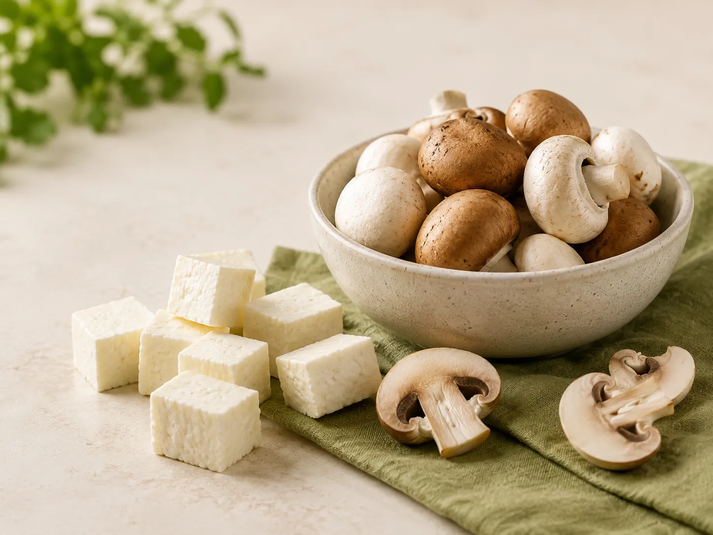
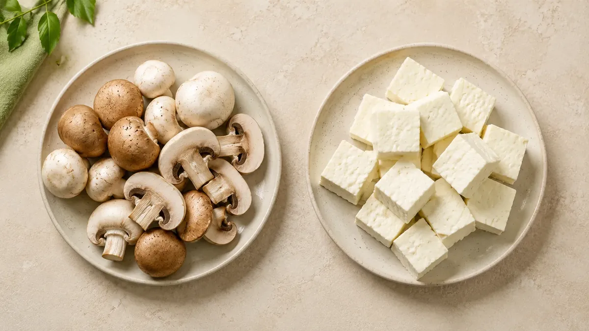
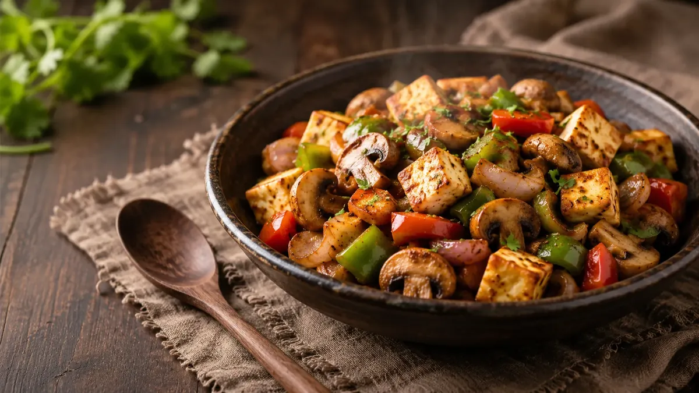

🍄 Mushrooms
Protein densityModest
Calorie densityLow
FatNaturally very low
Best roleVolume, flavour and variety
Mushrooms are often called a good source of plant-based protein. But can they really compete with paneer? Here’s what the comparison actually looks like.

For many vegetarians in India, paneer is one of the first foods that comes to mind when talking about protein.
Mushrooms are also often described as a protein food, which raises an obvious question: can a plate of mushrooms really replace paneer when protein is the goal?
The short answer is no—not gram for gram. But that does not make mushrooms nutritionally unimportant. The two foods simply play very different roles on the plate.
If protein is the only thing being compared, paneer is the clear winner.
Fresh mushrooms contain a relatively modest amount of protein because much of their weight is water. Paneer is much more protein-dense, although its exact nutritional composition varies depending on the milk and production method used.
For the final published article, nutritional comparisons should use a consistent database and clearly state whether values refer to raw or cooked foods. The Indian Food Composition Tables are maintained by the National Institute of Nutrition and are also catalogued by FAO.

Fresh mushrooms contain a lot of water, so they can add satisfying volume to stir-fries, curries, wraps and rice bowls.
Mushrooms contribute more than protein alone. Their value is better understood as part of the complete food and the overall meal.
They absorb flavour well and work across Indian dishes, pasta, soups, rice bowls and quick stir-fries.
The most useful answer may be to stop treating mushrooms and paneer as rivals. They work extremely well together.
Paneer can provide concentrated protein, while mushrooms add volume, texture and savoury flavour.

If the question is simply which food gives you more protein, paneer wins clearly. But mushrooms do not need to beat paneer to deserve a place on your plate. Paneer can be the protein anchor, while mushrooms make the meal bigger, more varied and more interesting.
Nutrition note: Nutritional values can vary by brand, preparation method and serving size. The comparison on this page is intended as a general guide rather than a substitute for product-specific nutrition information.